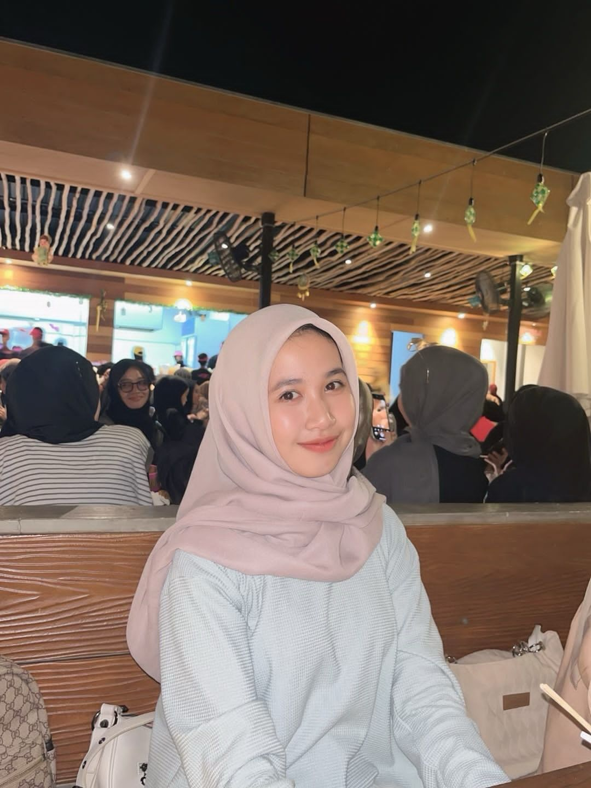

Tentang Saya
Saya adalah mahasiswa aktif di jurusan Informatika yang memiliki minat besar di bidang pengembangan softwer dan hardware, saya juga aktif dalam organisasi kampus Yaitu HIMA (Himpunan Mahasiswa Informatika)dan saya selaku bendahara umum di Himpunan.
Pendidikan
- S1 Informatika – Universitas Islam Negeri Datokarama Palu (2023 - Sekarang)
- IPK: 3.80/4.00
- SMK Negeri 1 Palu
- SMP Negeri 14 Sigi
- SD inpres Tomado
Keterampilan
- Bahasa Pemrograman: Python, HTML CSS (pemula)
- Framework: Flutter (pemula)
- Database: MySQL,
- Tools: VS Code, Figma
Proyek
- Website Agensi (2025) - Dibuat menggunakan Visual Code & HTML CSS
- Website linktree (2025) - Menggunakan HTML CSS
- Website Portfolio (2025) - Dibuat dengan HTML, CSS, dan JavaScript
Kontak
Email: riningkontoro.gmail.com
Instagram: r1nn.04
GitHub: github.com/rinncantikk